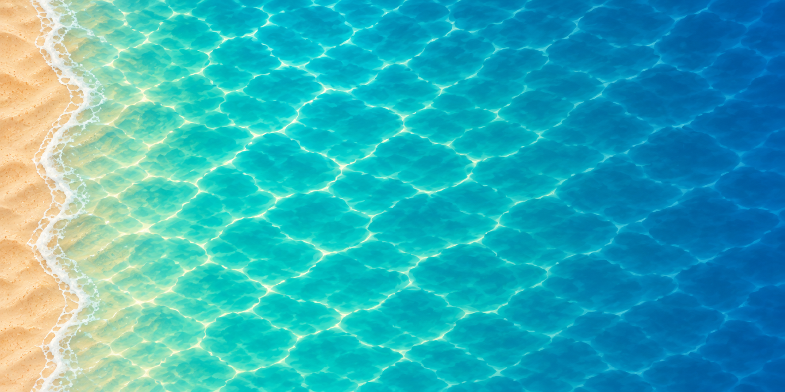
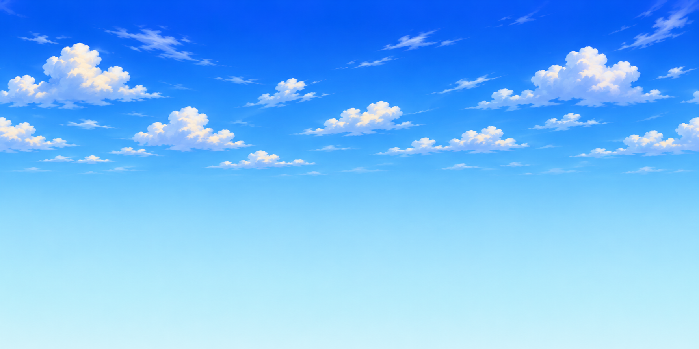
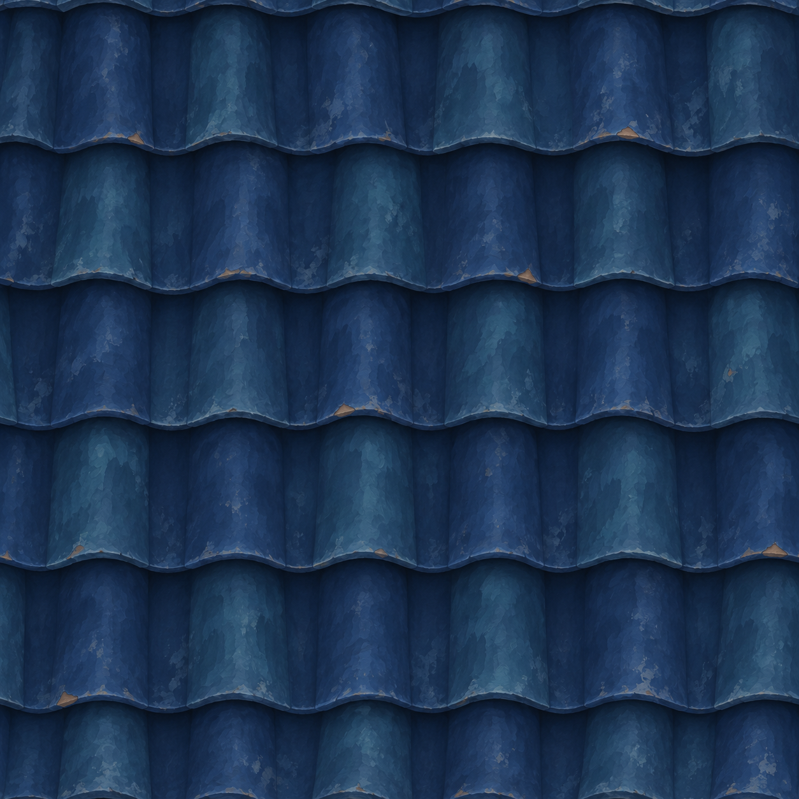
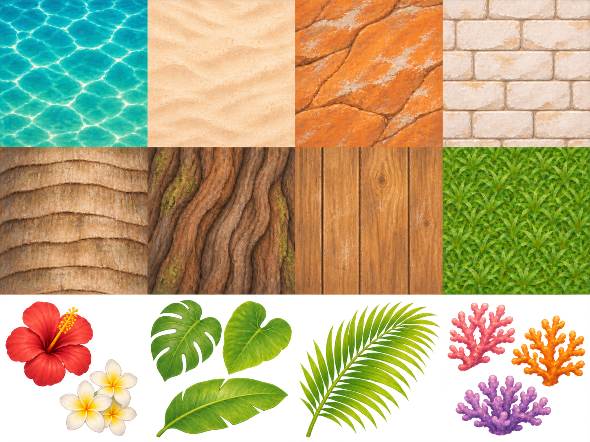

← Concepts de interface · Atlas do santuário, bazaar e forja · Texturas individuais v2 + ZIPTexturas da praia
Da orla ao mar
Duas regiões quadradas de uma pintura contínua: orla e água rasa à esquerda, mar profundo à direita. Use nessa ordem, sem girar ou espelhar.

Mar conectado · PNG · Dois recortes e UVs · Pacote para Godot
Céu tropical

Baixar céu
Telhas em azul-marinho

Baixar telhas
Atlas original
12 células · 1448 × 1086 px · Albedo estilizado · Recortes de vegetação e corais com transparência

Baixar atlas PNG · Mapa das regiões e UVs
| Linha | 1 | 2 | 3 | 4 |
|---|
| 1 | Água | Areia | Pedras | Tijolos brancos |
|---|
| 2 | Tronco de palmeira | Tronco da árvore | Madeira do barco | Grama |
|---|
| 3 | Flores | Folhas | Folhas de palmeira | Corais |
|---|
Base para modelagem e materiais. Validar emendas e escala no modelo; os materiais sólidos devem ignorar o alfa, e os recortes usam alpha scissor.